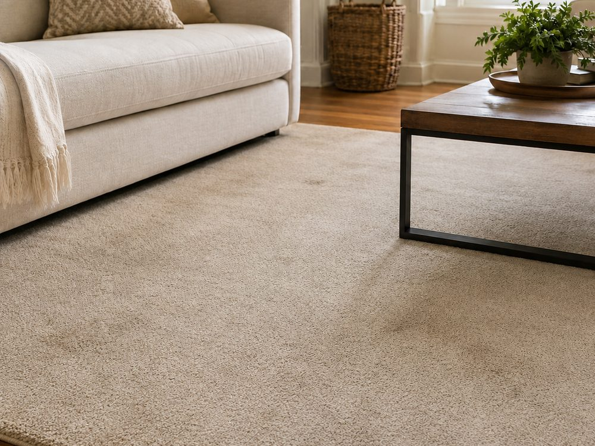
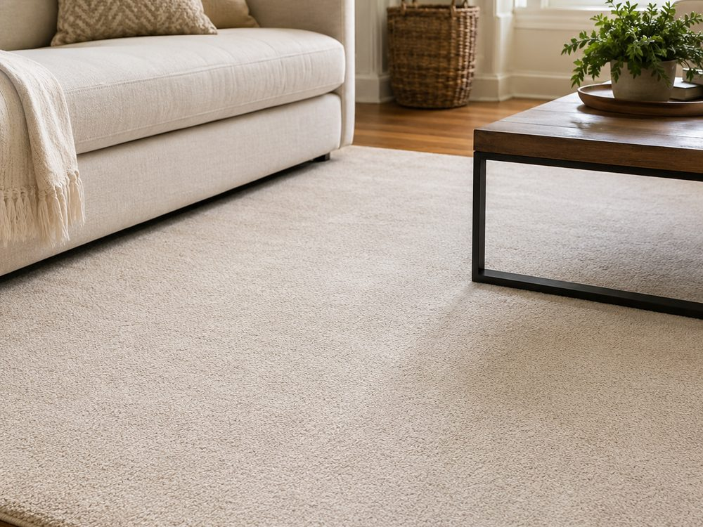

Професійне чищення килимів, ковроліну, штор, портьєр, ролет і жалюзі. Повертаємо тканині яскравість кольору та свіжість, піднімаємо збитий ворс. Працюємо засобами, безпечними для дітей і домашніх тварин. Килим і ковролін чистимо на місці — нічого не потрібно скручувати й кудись везти.
Килим збирає найбільше бруду в домі — по ньому щодня ходять, на нього все падає, у нього все всмоктується.
Для килима з високим ворсом і для щільного ковроліну потрібні різні режими — тому спершу оцінюємо виріб.
Дивимося тип покриття, довжину ворсу й міряємо площу — з цього рахується остаточна ціна.
Особливо важливо для вовняних і яскравих килимів — перевіряємо на непомітній ділянці.
Витягуємо пісок, пил і шерсть із глибини ворсу — без цього кроку чистка розмаже бруд.
Кожну пляму обробляємо окремо підібраним засобом до основної чистки.
Вимиваємо бруд із основи килима й одразу забираємо воду — килим не заливається.
Розчісуємо ворс, щоб килим повернув обʼєм і виглядав як новий, а не пригладжений.
Реальний приклад чистки килима — потягніть повзунок, щоб побачити різницю.


Вовняний килим, якому понад 8 років: збитий ворс і потьмянілий від бруду колір.
Ні. Ми чистимо килими та ковролін прямо у вас удома — обладнання привозить майстер. Меблі, що стоять на килимі, за потреби допоможемо трохи відсунути.
Портьєри та штори можна чистити безпосередньо на карнизі, не знімаючи. Якщо потрібне глибше очищення, майстер підкаже найкращий варіант на місці.
Зазвичай 6–10 годин залежно від довжини ворсу та провітрювання кімнати. Килим із високим ворсом сохне довше за ковролін.
У більшості випадків так — після вимивання бруду ворс розправляється, і ми додатково його розчісуємо. На ділянках, де ворс витерся до основи від меблів, повного відновлення чекати не варто — майстер чесно скаже про це під час огляду.
За квадратний метр, залежно від типу покриття: ковролін — 150 грн, килим з низьким ворсом — 180 грн, з високим — 210 грн, штори — 200 грн. Точну суму назвемо після замірів.
Ні. Розрахунок після того, як ви прийняли роботу.
Залиште контакт — майстер зателефонує, уточнить розміри й тип покриття та назве точну вартість.
Дякуємо!
Ми зв'яжемося з Вами найближчим часом.
Виїжджаємо у Київ, Бровари, Ірпінь, Бориспіль, Бучу, Вишневе та Обухів, а також у найближчі населені пункти області.